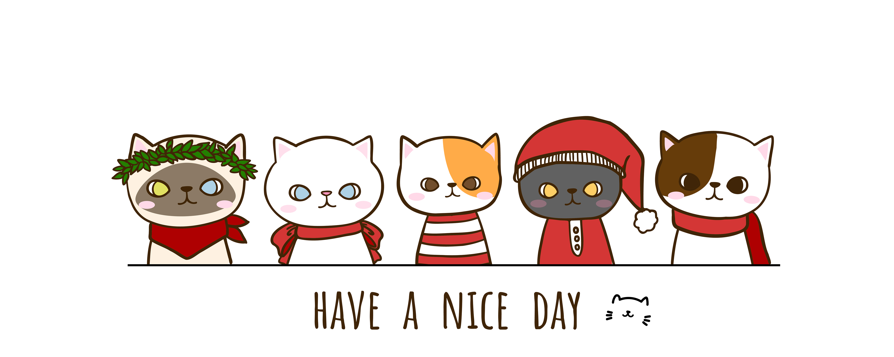

Bruna Büttenbender
Floripa - SC

ESTUDANTE DE DESENVOLVIMENTO WEB
Trajetória profissional de engenharia e área comercial/administrativa.
Segue minha síntese de qualificações:
- Profissional com experiência na área comercial e operacional;
- Vivência em processos da construção civil, fiscalização de implantação e controle de andamento de obras;
- Atuação no desenvolvimento de projetos, definições de metas, prazos e desenvolvimento;
- Condução de projetos e construção de planilhas comparativas e quantitativas;
- Conhecimento na elaboração de relatórios e apontamentos de cronograma via MS Project;
- Habilidade em negociação, vivência e treinamento de equipe;
- Experiência comercial na modalidade B2B;
- Coordenação de equipe.